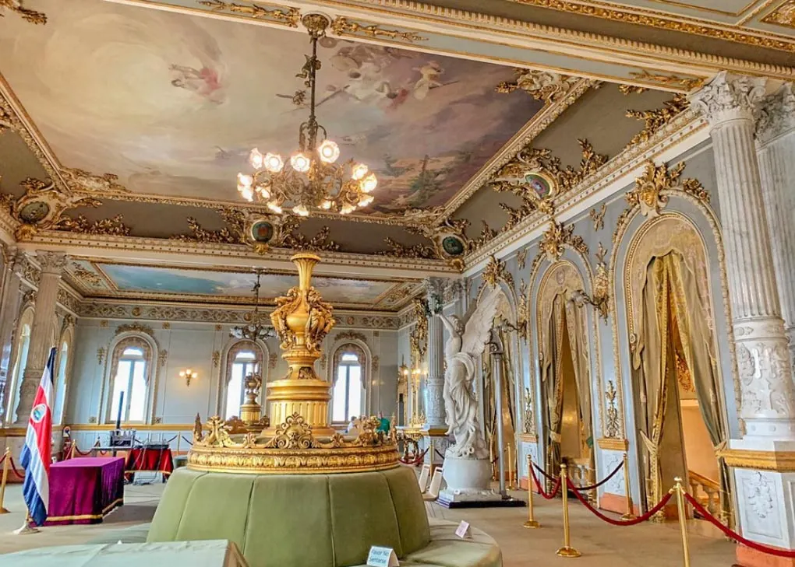
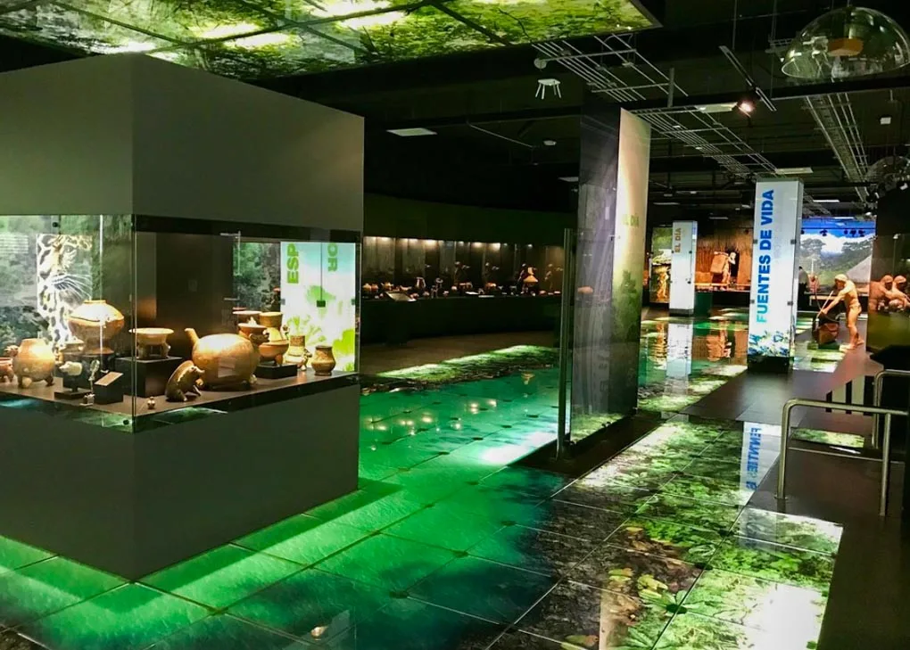

Top three activities to do at San José

Visit the National Theater
The National Theater (or Teatro Nacional Costa Rica) is one of San Jose’s most prestigious buildings.

Check out the Jade Museum
The Jade Museum is home to over 7,000 pieces of jade. It’s the largest collection of pre-Colombian jade in the world!

Check Out the Central Market
The Central Market in San Jose is a must-visit! This place is filled with interesting shops to buy souvenirs and lots of food!